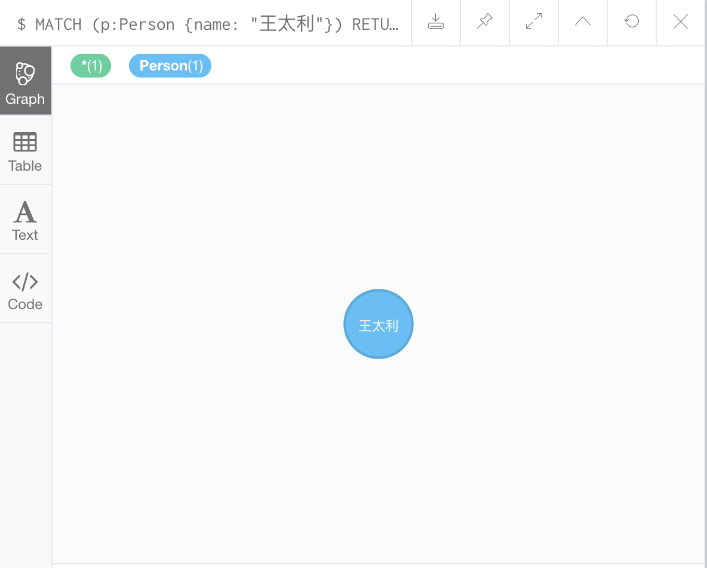
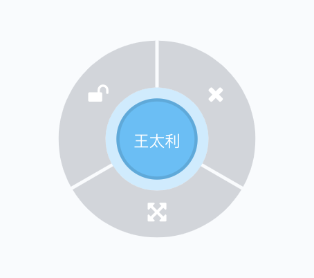
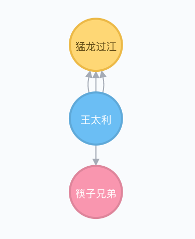
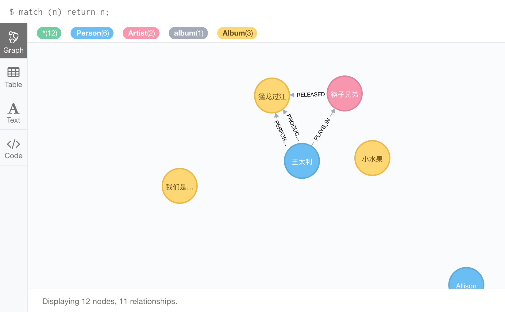
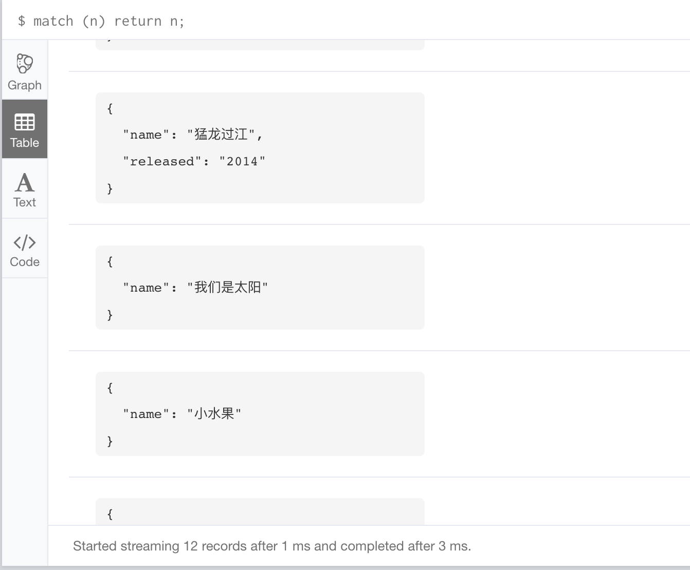

Cypher 的
MATCH语句允许你查询符合条件的数据。你可以使用MATCH来返回数据或对这些数据执行一些其他操作。
MATCH 语句用于匹配给定的条件，但实际上它并不返回数据。为了从 MATCH 语句返回数据，我们仍然需要使用 RETURN 子句。
检索一个节点
这里有个使用 MATCH 语句检索一个节点的的例子。
|
|
WHERE 子句与 SQL 的 WHERE 子句工作方式相同，它允许你提供额外的条件来缩小查询范围。
同时你可以在不使用 WHERE 子句的情况下获得相同的结果。你可以通过使用像创建节点那样的符号来查询节点。
下边的代码提供和上边语句相同的结果：
|
|
运行上边任意一条查询语句将会看到如下的节点被展示出来：

你可能已经注意到，点击一个节点会展开一个分成三部分的外部圆，每个部分有不同的选项：

点击底部选项将展开节点的关系：

关系
你还可以通过 MATCH 语句遍历关系。事实上，这才是 Neoj4 真正擅长的事情之一。
举个栗子，如果我们想找出哪个乐队发布了名为「猛龙过江」的专辑，可以使用如下查询语句：
|
|
这将返回以下节点：
可以看到我们在 MATCH 中使用的模式几乎是不言自明的，它匹配了所有发布过名为 猛龙过江 专辑的乐队。
我们使用了变量（a,b）以便在稍后的查询中引用他们。我们没有为关系提供任何变量，因为我们不需要在之后的查询中引用关系。
你可能还会注意到第一行使用的是我们在创建关系时相同的模式，这突出了 Cypher 语言的简单性，我们可以在不同的上下文中使用相同的模式（比如创建数据和遍历数据）。
返回全部节点
你可以通过省略过滤条件来返回数据库中所有的节点。因此以下查询将返回数据库中的所有节点：
|
|
我们所有的节点将被返回：

你还可以点击侧面的 Table 图标用表格来展示数据：

返回所有节点时要小心，在大型数据库中执行这个操作可能会产生很大的性能影响。通常建议限制结果以避免意想不到的问题。
限制结果
使用 LIMIT 来限制输出记录的数量，当你不确定结果集有多大时，使用 LIMIT 是个好主意。
因此我们可以简单的将 LIMIT 5 追加到前边的语句上来将输出限制为5条记录：
|
|